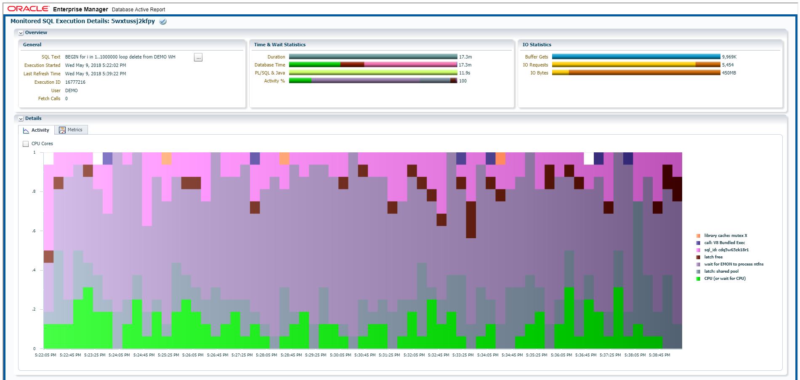
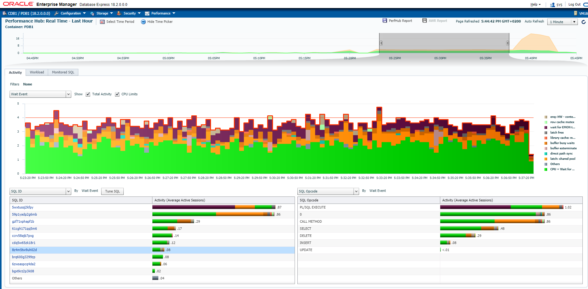
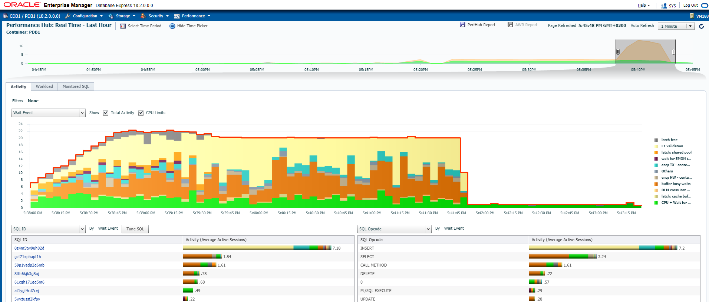

This was first published on https://www.dbi-services.com/blog/event-sourcing-cqn-is-not-a-replacement-for-cdc/ (2018-07-02)
Republishing here for new followers. The content is related to the versions available at the publication date.
.
We are in an era where software architects want to stream the transactions out of the database and distribute them, as events, to multiple microservices. Don’t ask why, but that’s the trend: store inconsistent eventually consistent copies of data in different physical components, rather than simply using logical views in the same database, where the data is ACIDely stored, processed and protected. Because it was decided that this segregation, in CQRS (Command Query Responsibility Segregation), will be physical, on different systems, the need for logical replication and change data capture is raising, with a new name: Event Sourcing.
When we want to replicate the changes without adding an overhead to the database, the solution is Change Data Capture from the redo stream. The redo contains all the physical changes and, with dictionary information and a little supplemental logging, we can mine it to extract the logical changes. Currently are commercial products (Oracle GoldenGate, Attunity, Dbvisit replicate) and there are some open source ones based on LogMiner (StreamSets, Debezium). LogMiner is available on all Oracle Database editions without any option. In Enterprise Edition, a more efficient solution was possible with Streams but now you have to pay for GoldenGate to use Streams. Unfortunately, sometimes you pay software update to get features removed and be sold in additional products.
Oracle has another feature that can help to replicate changes: Database Change notification, now known as Continuous Query Notification (CQN) or Object Change Notification (OCN). This feature has been implemented to refresh caches: you have a query that loads the cache and you want to be notified when some changes occurred, so that you have to update/refresh the cache. Then, in theory, this can be used to stream out the changes. However, CQN was not built for frequent changes but rather for nearly static, or slowly changing data. But sometimes we have to test by ourselves and here are my test using CQN with a lot of changes on the underlying table, just to show how it increases the load on the database and slows down the changes.
I create a DEMO table with one million rows:
17:21:56 SQL> whenever sqlerror exit failure;
17:21:56 SQL> create table DEMO (ID constraint DEMO_ID primary key) as select rownum from xmltable('1 to 1000000');
Table DEMO created.
And a table to hold notifications. As always when I want to start with an example, I start to get it from oracle-base:
17:21:58 SQL> -- from Tim Hall https://oracle-base.com/articles/10g/dbms_change_notification_10gR2
17:21:58 SQL> CREATE TABLE notifications (
2 id NUMBER,
3 message VARCHAR2(4000),
4 notification_date DATE
5 );
Table NOTIFICATIONS created.
17:21:58 SQL> CREATE SEQUENCE notifications_seq;
Sequence NOTIFICATIONS_SEQ created.
The callback function:
17:21:58 SQL> CREATE OR REPLACE PROCEDURE callback (ntfnds IN SYS.chnf$_desc) IS
2 l_regid NUMBER;
3 l_table_name VARCHAR2(60);
4 l_event_type NUMBER;
5 l_numtables NUMBER;
6 l_operation_type NUMBER;
7 l_numrows NUMBER;
8 l_row_id VARCHAR2(20);
9 l_operation VARCHAR2(20);
10 l_message VARCHAR2(4000) := NULL;
11 BEGIN
12 l_regid := ntfnds.registration_id;
13 l_numtables := ntfnds.numtables;
14 l_event_type := ntfnds.event_type;
15 IF l_event_type = DBMS_CHANGE_NOTIFICATION.EVENT_OBJCHANGE THEN
16 FOR i IN 1 .. l_numtables LOOP
17 l_table_name := ntfnds.table_desc_array(i).table_name;
18 l_operation_type := ntfnds.table_desc_array(i).Opflags;
19 IF (BITAND(l_operation_type, DBMS_CHANGE_NOTIFICATION.ALL_ROWS) = 0) THEN
20 l_numrows := ntfnds.table_desc_array(i).numrows;
21 ELSE
22 l_numrows :=0; /* ROWID INFO NOT AVAILABLE */
23 END IF;
24 CASE
25 WHEN BITAND(l_operation_type, DBMS_CHANGE_NOTIFICATION.INSERTOP) != 0 THEN
26 l_operation := 'Records Inserted';
27 WHEN BITAND(l_operation_type, DBMS_CHANGE_NOTIFICATION.UPDATEOP) != 0 THEN
28 l_operation := 'Records Updated';
29 WHEN BITAND(l_operation_type, DBMS_CHANGE_NOTIFICATION.DELETEOP) != 0 THEN
30 l_operation := 'Records Deleted';
31 WHEN BITAND(l_operation_type, DBMS_CHANGE_NOTIFICATION.ALTEROP) != 0 THEN
32 l_operation := 'Table Altered';
33 WHEN BITAND(l_operation_type, DBMS_CHANGE_NOTIFICATION.DROPOP) != 0 THEN
34 l_operation := 'Table Dropped';
35 WHEN BITAND(l_operation_type, DBMS_CHANGE_NOTIFICATION.UNKNOWNOP) != 0 THEN
36 l_operation := 'Unknown Operation';
37 ELSE
38 l_operation := '?';
39 END CASE;
40 l_message := 'Table (' || l_table_name || ') - ' || l_operation || '. Rows=' || l_numrows;
41 INSERT INTO notifications (id, message, notification_date)
42 VALUES (notifications_seq.NEXTVAL, l_message, SYSDATE);
43 COMMIT;
44 END LOOP;
45 END IF;
46 END;
47 /
Procedure CALLBACK compiled
17:21:58 SQL> -- thanks Tim
and the CQN registration:
17:21:58 SQL> -- register on DEMO;
17:21:58 SQL>
17:21:58 SQL> DECLARE
2 reginfo CQ_NOTIFICATION$_REG_INFO;
3 v_cursor SYS_REFCURSOR;
4 regid NUMBER;
5 BEGIN
6 reginfo := cq_notification$_reg_info ( 'callback', DBMS_CHANGE_NOTIFICATION.QOS_ROWIDS, 0, 0, 0);
7 regid := sys.DBMS_CHANGE_NOTIFICATION.new_reg_start(reginfo);
8 OPEN v_cursor FOR
9 SELECT dbms_cq_notification.CQ_NOTIFICATION_QUERYID, demo.* from DEMO;
10 CLOSE v_cursor;
11 sys.DBMS_CHANGE_NOTIFICATION.reg_end;
12 END;
13 /
PL/SQL procedure successfully completed.
Now I delete 1 million rows and commit:
17:21:58 SQL> exec dbms_workload_repository.create_snapshot;
PL/SQL procedure successfully completed.
17:22:02 SQL>
17:22:02 SQL> -- 1000000 deletes
17:22:02 SQL>
17:22:02 SQL> exec for i in 1..1000000 loop delete from DEMO WHERE id=i; commit; end loop;
PL/SQL procedure successfully completed.
17:39:23 SQL>
17:39:23 SQL> exec dbms_workload_repository.create_snapshot;
Here are the notifications captured:
17:39:41 SQL> select count(*) from notifications;
COUNT(*)
--------
942741
17:39:54 SQL> select * from notifications fetch first 10 rows only;
ID MESSAGE NOTIFICATION_DATE
--- ------------------------------------------- -----------------
135 Table (DEMO.DEMO) - Records Deleted. Rows=1 09-MAY-18
138 Table (DEMO.DEMO) - Records Deleted. Rows=1 09-MAY-18
140 Table (DEMO.DEMO) - Records Deleted. Rows=1 09-MAY-18
142 Table (DEMO.DEMO) - Records Deleted. Rows=1 09-MAY-18
145 Table (DEMO.DEMO) - Records Deleted. Rows=1 09-MAY-18
147 Table (DEMO.DEMO) - Records Deleted. Rows=1 09-MAY-18
149 Table (DEMO.DEMO) - Records Deleted. Rows=1 09-MAY-18
152 Table (DEMO.DEMO) - Records Deleted. Rows=1 09-MAY-18
154 Table (DEMO.DEMO) - Records Deleted. Rows=1 09-MAY-18
156 Table (DEMO.DEMO) - Records Deleted. Rows=1 09-MAY-18
The DML has been long and SQL Monitoring shows that 64% of the time was waiting on ‘Wait for EMON to process ntfns’ which is the notification process: 
The execution of the delete itself (cdq5w65zk18r1 DELETE FROM DEMO WHERE ID=:B1) is only a small part of the database time. And we have additional load on the database: 
The following is activity related to Continuous Query notification queuing of messages, the one that slows down the modifications, during the delete (from 17:22 to 17:38):
59p1yadp2g6mb call DBMS_AQADM_SYS.REGISTER_DRIVER ( )
gzf71xphapf1b select /*+ INDEX(TAB AQ$_AQ_SRVNTFN_TABLE_1_I) */ tab.rowid, tab.msgid, tab.corrid, tab.priority, tab.delay, tab.expiration ,tab.retry_count, tab.exception_qschema, tab.exception_queue, tab.chain_no, tab.local_order_no, tab.enq_time, tab.time_manager_info, tab.state, tab.enq_tid, tab.step_no, tab.sender_name, tab.sender_address, tab.sender_protocol, tab.dequeue_msgid, tab.user_prop, tab.user_data from "SYS"."AQ_SRVNTFN_TABLE_1" tab where q_name = :1 and (state = :2 ) order by q_name, state, enq_time, step_no, chain_no, local_order_no for update skip locked
61cgh171qq5m6 delete /*+ CACHE_CB("AQ_SRVNTFN_TABLE_1") */ from "SYS"."AQ_SRVNTFN_TABLE_1" where rowid = :1
ccrv58ajb7pxg begin callback(ntfnds => :1); end;
cdq5w65zk18r1 DELETE FROM DEMO WHERE ID=:B1
And at the end (17:38), when the modifications are committed, my callback function is running to process the messages: 
the main query is the insert from the callback function:
8z4m5tw9uh02d INSERT INTO NOTIFICATIONS (ID, MESSAGE, NOTIFICATION_DATE) VALUES (NOTIFICATIONS_SEQ.NEXTVAL, :B1 , SYSDATE)The callback function may send the changes to another system, rather than inserting them here, but then you can question the availability and, anyway, this will still have a high overhead in context switches and network roundtrips.
In summary, for 1 million rows deleted, here are the queries that have been executed 1 million times:
Elapsed
Executions Rows Processed Rows per Exec Time (s) %CPU %IO SQL Id
------------ --------------- -------------- ---------- ----- ----- -------------
1,000,000 1,000,000 1.0 123.4 55.2 3.2 cdq5w65zk18r1 Module: java@VM188 (TNS V1-V3) DELETE FROM DEMO WHERE ID=:B1
999,753 999,753 1.0 261.5 88.6 .7 dw9yv631knnqd insert into "SYS"."AQ_SRVNTFN_TABLE_1" (q_name, msgid, corrid, priority, state, delay, expiration, time_manager_info, local_order_no, chain_no, enq_time, step_no, enq_uid, enq_tid, retry_count, exception_qschema, exception_queue, recipient_key, dequeue_msgid, user_data, sender_name, sender_address, sender_protoc
978,351 978,351 1.0 212.5 64.3 0 61cgh171qq5m6 Module: DBMS_SCHEDULER delete /*+ CACHE_CB("AQ_SRVNTFN_TABLE_1") */ from "SYS"."AQ_SRVNTFN_TABLE_1" where rowid = :1
978,248 942,657 1.0 971.6 20 .7 8z4m5tw9uh02d Module: DBMS_SCHEDULER INSERT INTO NOTIFICATIONS (ID, MESSAGE, NOTIFICATION_DATE) VALUES (NOTIFICATIONS_SEQ.NEXTVAL, :B1 , SYSDATE)
978,167 942,559 1.0 1,178.7 33.1 .5 ccrv58ajb7pxg Module: DBMS_SCHEDULER begin callback(ntfnds => :1); end;
977,984 977,809 1.0 73.9 96.5 0 brq600g3299zp Module: DBMS_SCHEDULER SELECT INSTANCE_NUMBER FROM SYS.V$INSTANCE
933,845 978,350 1.0 446.9 51.4 .7 gzf71xphapf1b Module: DBMS_SCHEDULER select /*+ INDEX(TAB AQ$_AQ_SRVNTFN_TABLE_1_I) */ tab.rowid, tab.msgid, tab.corrid, tab.priority, tab.delay, tab.expiration ,tab.retry_count, tab.exception_qschema, tab.exception_queue, tab.chain_no, tab.local_order_no, tab.enq_time, tab.time_manager_info, tab.state, tab.enq_tid, tab.step_no, tab.sender_name
This is a huge overhead. And all this has generated 8 millions of redo entries.
In summary, just forget about CQN to stream changes. This feature is aimed at cache refresh for rarely changing data. What we call today ‘event sourcing’ exists for a long time in the database, with redo logs. When a user executes some DML, Oracle generates the redo records first, store them and apply them to update the current version of the table rows. And the redo logs keeps the atomicity of transaction (the ‘A’ in ACID). Then better use this if the changes need to be propagated to other systems.
{kind=link}
{kind=link}
{kind=link}